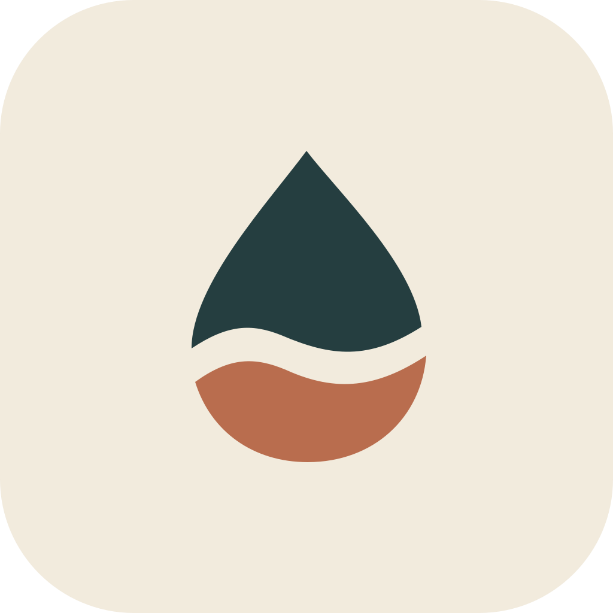
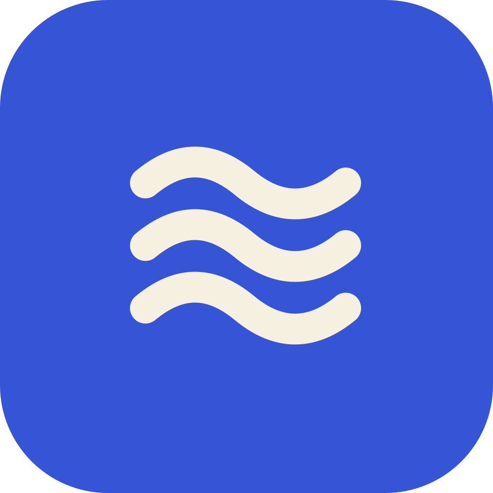
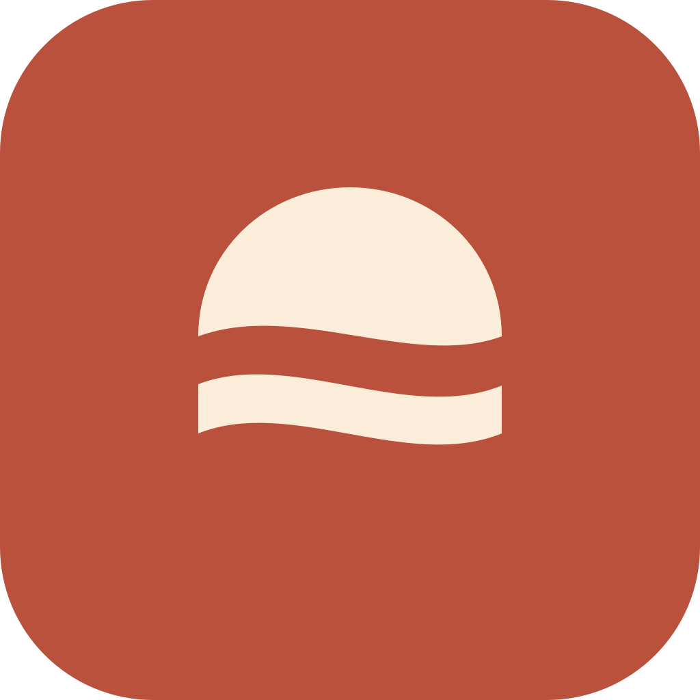

01huí wēn
洄温
HUIWEN回旋水纹 · 深青与杏金
把回旋的水流收成一笔，暖色圆点像留在水中的温度。
64 PX
48 PX
32 PX
MONO
为校园热水的日常，留下一个简洁而有艺术感的符号。
回旋水纹 · 深青与杏金
把回旋的水流收成一笔，暖色圆点像留在水中的温度。

陶色水滴 · 一道留白
用一道有呼吸感的留白切开水滴，让水的清澈与陶器的温润相遇。

层叠波形 · 清透群青
三条波形有相同的节奏，用几何秩序表达流动；像水纹，也像折叠的缎带。

暖阳倒影 · 朱陶与米白
把一轮暖阳和水面倒影压缩成两个色块，保留版画般的安静与温度。